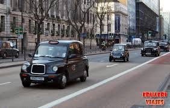
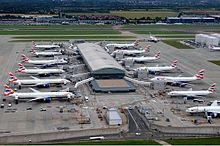
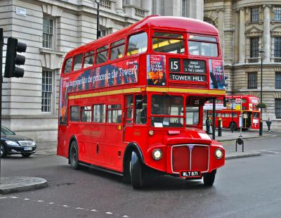
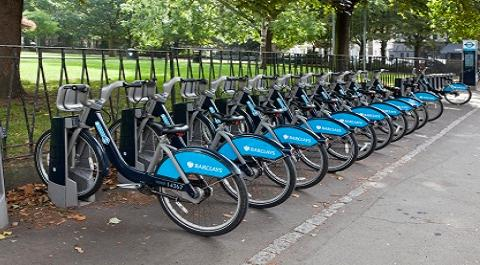

El transporte en la ciudad es una de las cuatro áreas principales gestionadas por el alcalde de Londres,185 aunque sus competencias presupuestarias no abarcan la red de trenes de larga
distancia que entra en la ciudad. En 2007 el alcalde asumió la responsabilidad de algunas líneas locales de tren, las que ahora forman la red London Overground, que así se sumaban a sus
responsabilidades previas sobre el metro, los tranvías y los autobuses urbanos. La red de transporte público de Londres, que es una de las más extensas del mundo, es administrada por
Transport for London. El desplazamiento en bicicleta es cada vez más popular en Londres y la London Cycling Campaign intenta mejorar esta forma de desplazamiento por la ciudad.

Las líneas que forman el metro de Londres, los tranvías y los autobuses se convirtieron en parte de un sistema de transporte integrado mediante la creación en 1933 de la organización
London Passenger Transport Board. En la actualidad es Transport for London el cuerpo de gobierno local responsable de la mayor parte de los aspectos concernientes al sistema de transporte
del Gran Londres y está dirigida por una junta y un comisionado designado por el propio alcalde.
Aeropuertos
Londres es uno de los principales centros del tráfico aéreo mundial y además tiene el espacio aéreo urbano más grande. Ocho aeropuertos tienen la palabra Londres en su nombre, pero la mayor
parte del tráfico aéreo pasa por seis de ellos. El aeropuerto de Londres-Heathrow, en Hillingdon, al oeste de la ciudad, es el aeropuerto con más tráfico aéreo internacional del mundo y la
base de la aerolínea de bandera del Reino Unido, British Airways.190 En marzo de 2008 se inauguró la quinta terminal de Heathrow.191 Hubo planes para crear una tercera pista de aterrizaje y
una sexta terminal, pero fueron cancelados en mayo de 2010 por el gobierno británico.192 En septiembre de 2011 se inauguró un sistema de transporte personal rápido que conecta el aeropuerto con los cercanos aparcamientos.193
El aeropuerto de Londres-Gatwick, ubicado al sur de la ciudad en el condado de Sussex Occidental, maneja un tráfico similar, además de algunas aerolíneas de bajo coste que realizan vuelos
de corta distancia.194 El aeropuerto de Londres-Stansted, al noreste de la ciudad, en Essex, es el aeropuerto principal de Ryanair en el Reino Unido.195 El aeropuerto de Londres-Luton,
al norte en Bedfordshire, da servicio principalmente a compañías de bajo coste y corta distancia.196 El aeropuerto de la Ciudad de Londres, el más pequeño y más céntrico de todos, da
servicio a vuelos de negocios y tiene un considerable tráfico de jets privados.197 El aeropuerto de Londres-Southend, en Essex al este de la ciudad, es un pequeño aeropuerto regional
para vuelos de bajo coste y corta distancia. Recientemente ha sido remodelado y ahora tiene una nueva terminal, una pista más grande y una nueva estación de tren que ofrece rápidos
trayectos hasta la capital.

Autobuses y tranvías
La red de autobuses de Londres es una de las más grandes del mundo: funciona 24 horas al día, cuenta con 8000 autobuses, 700 líneas y tiene unos seis millones de usuarios diarios.
En 2003 esta red realizó un millón y medio de desplazamientos de corta distancia, más que el metro.199 Sus beneficios anuales son de unos 850 millones de libras. La ciudad también posee
la mejor red de accesibilidad para sillas de ruedas200 y desde el año 2007 se hizo más accesible para personas con deficiencias auditivas o visuales gracias, en parte, a la introducción
de avisos audiovisuales. Los distintivos autobuses rojos de dos pisos y los taxis negros de diseño retro son, junto al metro, iconos internacionales de Londres.201 202
La capital británica tiene también una red moderna de tranvías, conocida como Tramlink y con sede en Croydon, al sur de la ciudad. Cuenta con 39 paradas, tres rutas y transportó a 26,5
millones de personas en 2008. Desde ese mismo año Tramlink pertenece a Transport for London, organismo que tiene previsto invertir 54 millones de libras hasta el año 2015 en el
mantenimiento, renovación y ampliación de la capacidad del servicio. Desde 2009 todos sus tranvías han sido reformados.203

Teleférico
Londres cuenta con el Teleférico Aerolínea Emirates, que se inauguró en junio de 2012 y cruza el río Támesis uniendo la península de Greenwich con los Royal Docks, en el este de la ciudad.
Este telecabina está integrado con la tarjeta Oyster de Londres, que simplifica los pagos en el transporte público.
Bicicleta
El transporte en bicicleta en Londres ha vivido un renacimiento en el siglo XXI. Los ciclistas disfrutan de un modo de transporte por la ciudad más barato y a veces más rápido que el
transporte público o los coches privados. El lanzamiento de un sistema de bicicletas compartidas en julio de 2010 ha sido un éxito y goza de gran aceptación entre los londinenses.

Tren
Metro
El metro de Londres, conocido como The Tube, es el más antiguo del mundo y el segundo más extenso.
El metro de Londres —conocido coloquialmente como The Tube— es el más antiguo207 y el segundo más extenso del mundo.29 Entró en funcionamiento en 1863 y en la actualidad tiene 270
estaciones.208 En sus inicios fue construido y puesto en funcionamiento por varias compañías privadas y tuvo la primera línea de metro de tracción eléctrica del mundo, la City & South
London Railway.209 Todos los días usan el metro londinense tres millones de pasajeros, en torno a mil millones al año.210 Un programa de inversiones está intentando resolver sus
problemas de congestión y fiabilidad, a pesar de lo cual Londres ha sido elogiada por ser la ciudad con el mejor transporte público.211 El sistema de tren ligero Docklands Light
Railway, que empezó a funcionar en 1987, es un segundo sistema de metro, más local, que usa trenes más pequeños y ligeros para trayectos entre London Docklands y Greenwich.